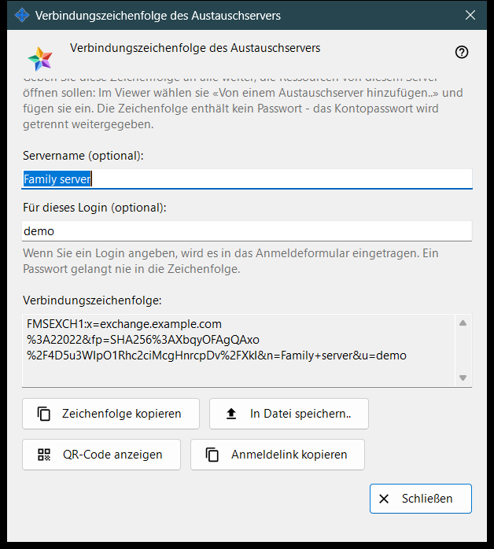
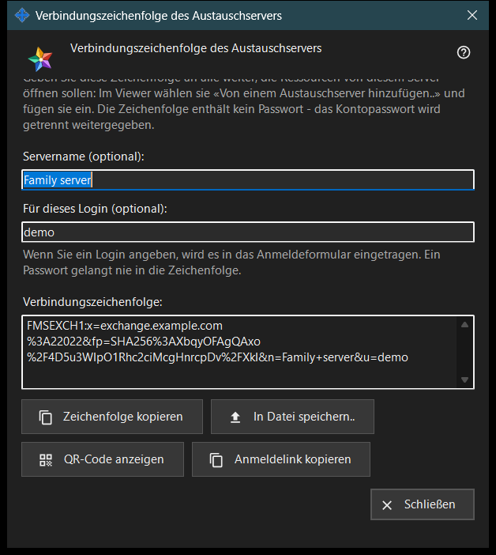

Verbindungszeichenfolge des Austauschservers
Verwendungszweck
In diesem Fenster wird die Verbindungszeichenfolge erstellt, mit der andere Geräte diesen Austauschserver finden und sein Zertifikat prüfen. Sie öffnen es über «Verbindungszeichenfolge und QR-Code..» in den Einstellungen des Austauschservers oder in der Begrüßung des Servers beim ersten Start. Das Fenster ändert keine Einstellung.


In dieser Reihenfolge
- Stellen Sie sicher, dass der Server ein Zertifikat hat und die Adresse für Clients festgelegt ist.
- Öffnen Sie das Fenster: Die Zeichenfolge erscheint sofort.
- Geben Sie bei Bedarf einen Servernamen und ein Login ein; die Zeichenfolge wird einen Moment nach Ihrer letzten Eingabe neu erstellt.
- Kopieren Sie die Zeichenfolge, speichern Sie sie in einer Datei, zeigen Sie ihren QR-Code an oder kopieren Sie den Anmeldelink.
- Geben Sie das Ergebnis an die andere Person weiter und übermitteln Sie das Kontopasswort getrennt.
- Klicken Sie auf «Schließen».
Die Elemente
Wann die Schaltfläche aktiv ist
«Verbindungszeichenfolge und QR-Code..» ist nur aktiv, wenn der Server ein Zertifikat hat und die Adresse für Clients festgelegt ist. Bei leerer Adresse bleibt die Schaltfläche deaktiviert, und der Hinweis darunter lautet «Legen Sie zuerst die Adresse für Clients fest: Ohne sie kann keine Verbindungszeichenfolge erstellt werden.» Im Fenster selbst bleiben die Schaltflächen deaktiviert, solange keine Zeichenfolge vorhanden ist.
Servername und Login
«Servername (optional):» nimmt bis zu 64 Zeichen auf und wird in der Zeichenfolge als Name des Servers gespeichert. «Für dieses Login (optional):» nimmt 3 bis 64 Zeichen auf (a-z, 0-9, Punkt, Unterstrich, Bindestrich) und wird im Anmeldeformular des Geräts eingetragen, das die Zeichenfolge verwendet. Ein Passwort gelangt nie in die Zeichenfolge.
Verbindungszeichenfolge
Das schreibgeschützte Feld «Verbindungszeichenfolge:» zeigt das Ergebnis: die Adresse für Clients, den Fingerabdruck des Zertifikats sowie den optionalen Namen und das Login. Das Gerät, das die Zeichenfolge erhält, vertraut dem darin enthaltenen Fingerabdruck, sodass ihn niemand von Hand vergleichen muss.
Kopieren und speichern
«Zeichenfolge kopieren» legt sie als normalen Text in die Zwischenablage, weil sie kein Geheimnis ist, und die Zeile darunter meldet «Die Zeichenfolge wurde kopiert.» «In Datei speichern..» schreibt eine .fmsexch-Textdatei (vorgeschlagener Name exchange-server.fmsexch) und zeigt ihren Pfad an; das andere Gerät liest sie mit «Datei öffnen..» in seinem Fenster für das Austauschkonto. Ist die Zwischenablage belegt oder lässt sich die Datei nicht schreiben, teilt eine Zeile das mit.
QR-Code und Anmeldelink
«QR-Code anzeigen» öffnet ein Bild derselben Zeichenfolge zum Scannen; es nennt einen Server und gewährt keinen Zugriff auf irgendetwas. «Anmeldelink kopieren» erscheint nur, wenn dieser Server einen Webclient bereitstellt; er kopiert einen Browserlink, der dieselbe Zeichenfolge enthält.
Wenn die Zeichenfolge nicht erstellt werden kann
Eine Zeile in der Warnfarbe nennt die Ursache: Name oder Login liegen außerhalb der Grenzen; der Server hat kein Zertifikat (starten Sie den Server einmal); oder der Austauschserver hat nicht geantwortet. Beheben Sie die Ursache, dann wird die Zeichenfolge neu erstellt. «Schließen» beendet das Fenster; Name und Login werden nicht gespeichert.
Managereinstellungen · SFTP-Freigabeeinstellungen · Einstellungen des Austauschservers